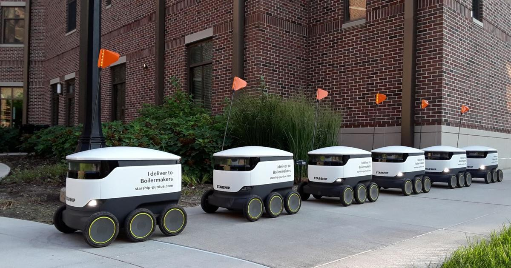
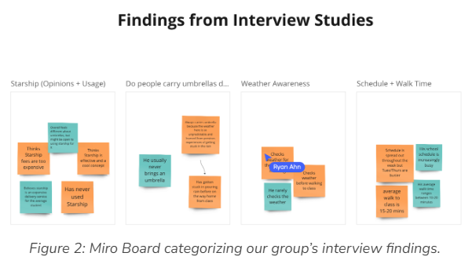
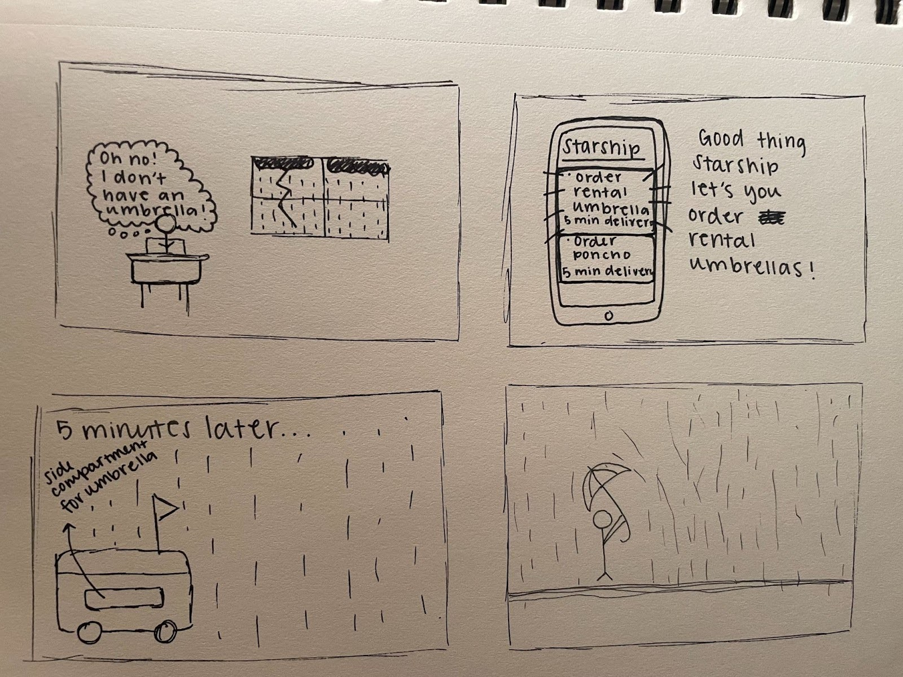
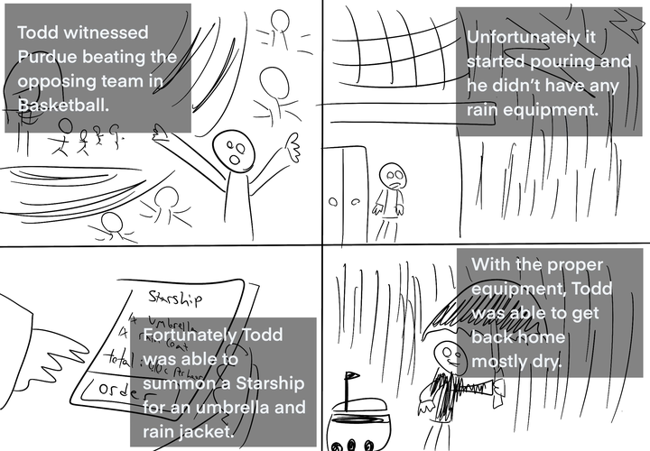
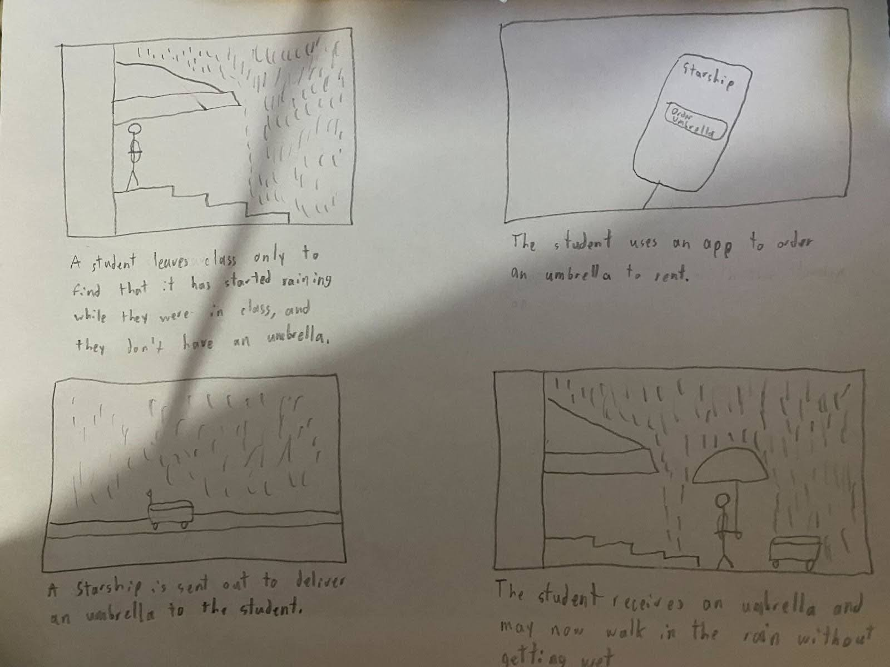

By Team 12: Isabelle Westerfeld, Ryan Ahn, Ethan Baxter, Zack Wang
This project focused on repurposing Starship robots to go beyond food delivery. The objective was to explore innovative solutions like delivering rental umbrellas and rain gear during unpredictable weather conditions at Purdue University. Our team explored various scenarios such as delivering items directly to buildings, handling Amazon returns, and even distributing PUSH prescriptions, aiming to make daily campus life more convenient and less stressful.
The introduction of rental umbrellas aims to solve the common inconvenience of getting caught in rain unprepared. By positioning Starships strategically across campus, students can quickly access rain gear, thereby preserving their academic materials and personal comfort during sudden downpours.


We identified that Purdue students often forget to carry rain gear, which led to our design question: How can Starship deliver umbrellas, water-resistant covers, and rain ponchos efficiently? The team conducted extensive field research, gathering data through surveys and direct observations to understand student habits and the logistical feasibility of implementing our solution.
The solution incorporates a user-friendly interface on the Starship app, enabling students to order rain gear to their location. This service not only enhances the student experience but also fosters a community-focused approach to problem-solving on campus.
Prototyping was a critical phase where we visualized the service operation through various scenarios depicted in storyboards. These scenarios included unexpected rain during outdoor campus events, classes, and other daily activities, showing how students could interact with the service seamlessly.



Visual designs played a significant role in communicating the potential of our project. Detailed storyboards and interface mockups helped convey how easy and beneficial it would be to use the Starship service during inclement weather, emphasizing user accessibility and simplicity.
Our project demonstrated a practical use of technology to solve a real-world problem faced by students. The feedback from peers and instructors has been overwhelmingly positive, suggesting high potential for real-world application. Reflections from team members highlighted the collaborative effort and personal growth experienced through this project.
We learned valuable lessons in user-centered design and the importance of empathy in the design process. The ability to adapt based on user feedback and iterate on our designs was invaluable.